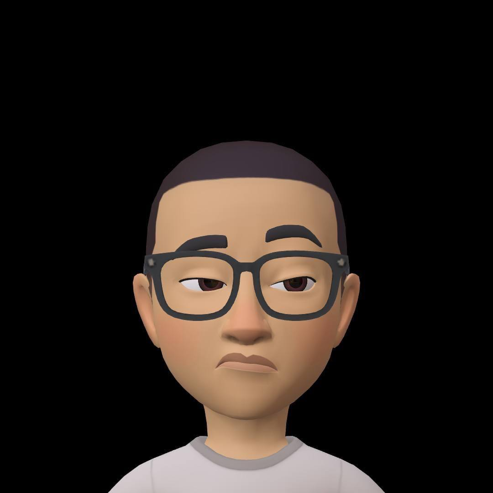

the Hub
Vazghen Vardanian

AvailableJunior full-stack developer · AI & blockchain enthusiast — building and shipping on the modern web
My Projects
Tap More about me above to reveal the collection
My Library
Books catalogue, & summaries I/or my agents have made
My Novel
Fiction work in progress
Advi Systems
Lead generation agency I founded
Socialize
Social app for event discovery
My Agents
AI assistants & bots I've built
Tsekhamard Production
My video production studio
Portfolio
Design & development work
Investment Strategies
The strategies I actually use
Contact Me
iamvazghen@gmail.com